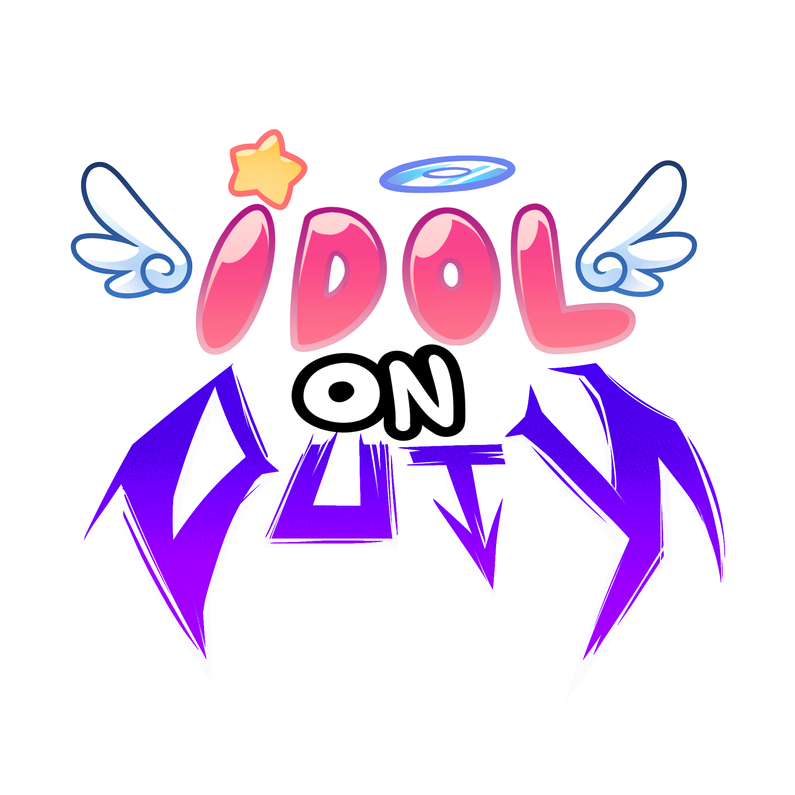
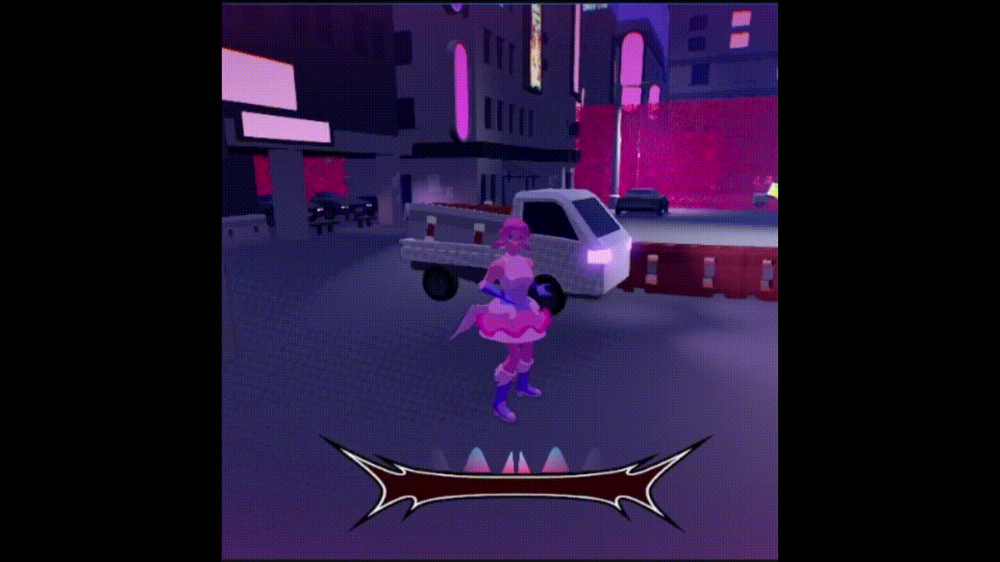
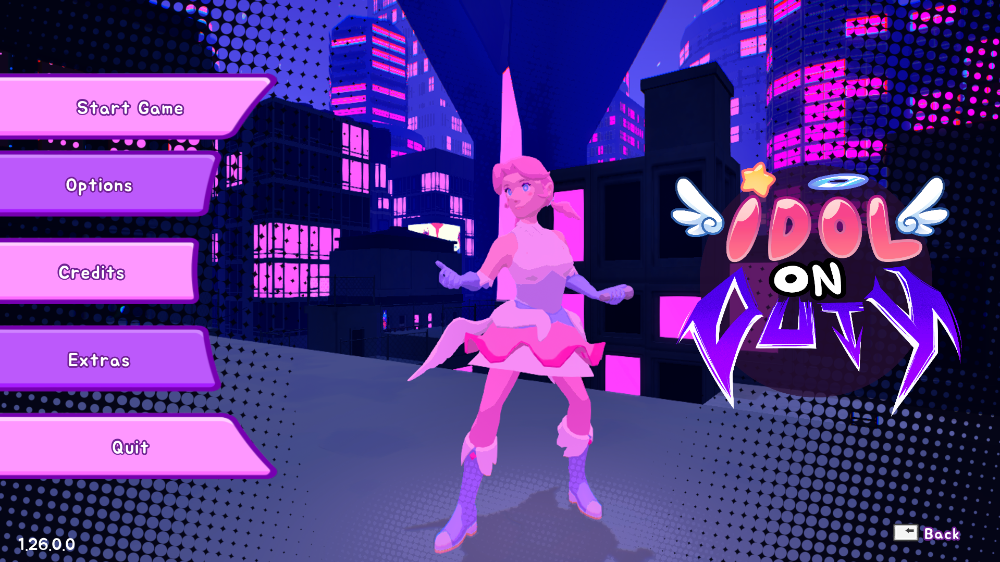
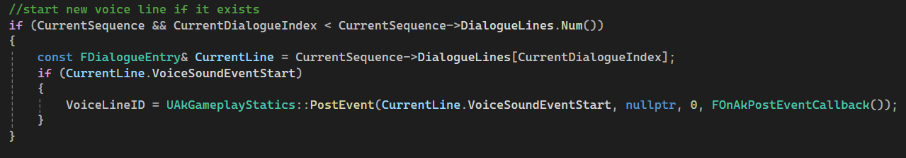
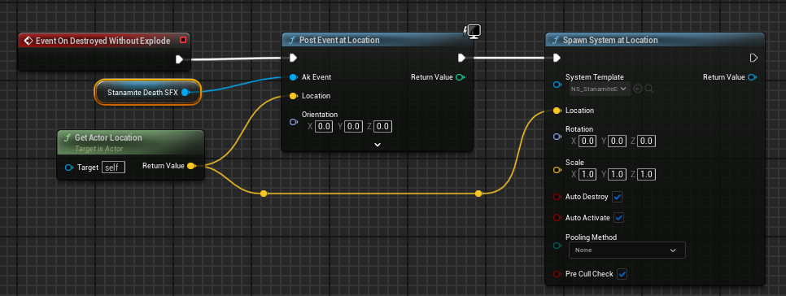

Unreal Engine · Wwise
Idol On Duty
Idol On Duty is an Unreal Engine student game made by a team of 20 people, using Wwise as the audio middleware.
I was the sole audio programmer and, during the second semester, the Audio Advocate.
Responsibilities
- Audio asset implementation
- Backend systems
- Documentation
- Department task tracking
- Cross-discipline communication

Audio Programmer

BPM System — C++ Unreal System
One of the main systems I programmed was the Beats Per Minute System. It lets other systems connect to the music and retrieve important song data. The UI pulses, the environment lights up, and enemy logic fires on beat.
To communicate that a beat had occurred, I used Unreal’s dynamic delegates and Wwise’s interactive music messaging.

Audio Asset Implementation
As the sole audio programmer, I implemented audio assets so the music and sound designer could devote more time to creating and refining them.
The pipeline consisted of:
- Talking with the sound designer to determine priorities for assets in development.
- Creating the architecture required for each asset.
- Testing assets for functionality and quality.
Some assets required C++ implementation, while others were handled with Blueprints.


Audio Advocate
I inherited this role during the project’s second semester and adapted quickly to its new responsibilities.
Responsibilities included:
- Cross-disciplinary communication to make sure audio was considered throughout the team’s work.
- Task tracking and weekly planning to anticipate problems and avoid them.
- Being the first responder for audio-related questions and problems.
These efforts increased the audio team’s workflow and helped the wider team include audio in its design process instead of treating it as an afterthought.